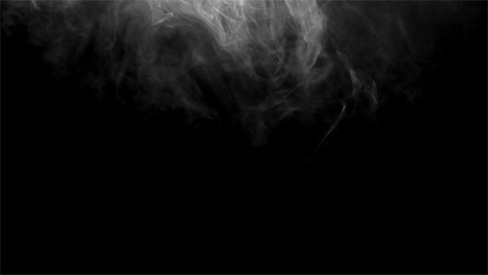

السلام عليكم ورحمة الله وبركاته
Dear brothers, sisters, elders, on behalf of the Rabbani family, Ramadan
Mubarak.
With the initiation of Ramadan, it is crucial that we attempt to better ourselves.
One
way of doing this is through - removal of bad deeds. Lying, backbiting, swearing, music.
Another way is - add good deeds. Salah in congregation, reading the Quran, helping the
community.
Trying to be like the Prophet Muhammad ﷺ is the best way to improve oneself.
Try your
best to incorporate this advice during this blessed month, and continue the good deeds beyond.
پیارے
بھائیوں، بہنوں، بزرگوں، ربانی خاندان کی جانب سے رمضان مبارک۔
رمضان کے آغاز کے ساتھ ہی یہ بہت ضروری ہے کہ
ہم اپنے آپ کو بہتر بنانے کی کوشش کریں۔
ایسا کرنے کا ایک طریقہ برے کاموں کی برطرفی کے ذریعے ہے۔ جھوٹ
بولنا، غیبت کرنا، گالی دینا، موسیقی۔
دوسرا طریقہ ہے - نیک اعمال شامل کریں۔ باجماعت نماز پڑھنا، قرآن پڑھنا، معاشرے کی مدد کرنا۔
پیغمبر
محمد صلی اللہ علیہ وسلم جیسا بننے کی کوشش کرنا اپنے آپ کو بہتر بنانے کا بہترین طریقہ ہے۔
اس مبارک وقت میں
اس نصیحت کو شامل کرنے کی پوری کوشش کریں مہینہ، اور اس سے آگے نیک اعمال جاری رکھیں